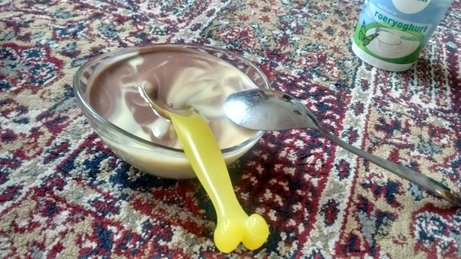

پیادهروی در دلفت-عصر هیجده جون دوهزار و پانزده
2015-06-18 20:14
ساختمان قدیم شهرداری دلفت یا به قول خودشان gemeente. اولین بار سال دوم اقامت در دلفت رفتیم اینجا تا شهردار برای ما و دیگر شرکت کنندگان کنفرانس «پیشروان تکنولوژیهای زیرزمینی» نطق کند به انگلیسی. فکر کنم کل یوم ده دوازده نفری بودیم. شهردار با لباس رسمی آمد و با همهمان دست داد و نطق مفصلی کرد درباره برنامههای انتقال ایستگاه قطار به زیرزمین و احداث مجتمع تجاری و نیاز به تکنولوژیهای نوین و شما چه خوبید و اینها. من که کلن اشتباهی توی آن جمع بودم.
از دیگر کاربردهای این ساختمان این است که در ایام خاصی از سال آدمهای غیر هلندی واردش میشوند، یک قهوه یا چایی صرف میکنند تا شهردار بیاید و به زبان هلندی برایشان نطق کند، بعدش شهردار صدایشان میکند و یک بسته پنیر هلندی و یک پوشه آبی میدهد دستشان، با هم عکس میگیرند و نخودنخود هر که رود خانه خود. آدمی که از در خارج شده میتواند بدون ویزا به آمریکا سفر کند.
Vaderdag
2015-06-17 20:14

هلندیها هم روز پدر دارند و هم روز مادر. بچهها از یکی دو هفته قبل یک کاردستی کوچک درست میکنند برای هدیه. با آیدا خانه بودیم و wii بازی میکردیم. دختر مرتب برایم توضیح میداد که چند روز دیگر «پدر روز» است و کادویت را فلانجا گذاشته ام و حق نداری بازش کنی. پدر روز را مستقیم از هلندی ترجمه میکرد و جوری میگفت انگار بخواهد بگوید پدرسگ! وسط بازی هوس دسر کرده بود. رفت برای خودش vla بریزد. برگشت با یک کاسه فلا و دو تا قاشق. بی هیچ حرفی. از آن لحظاتی بود که جاذبه زمین صفر میشود.
پیادهروی در دلفت-عصر هفده جون دوهزار و پانزده
2015-06-17 20:14

از این کانالهای عجیب که یک طرفشان خیابان است و طرف دیگرشان خانه، چندتایی در مرکز شهر داریم. داخل این خانهها را ندیدهام. شنیدهام کوچکند و تاریک و نمور، هرچند خیلی پرطرفدار و گران. برایم قابل تصور نیست زیر سطح آب زندگی کنم. کسی نگوید که همین الانش هم همهمان در دلفت زیر سطح آب هستیم و مالیاتش را هم میدهیم. این با آن یکی خیلی فرق دارد!